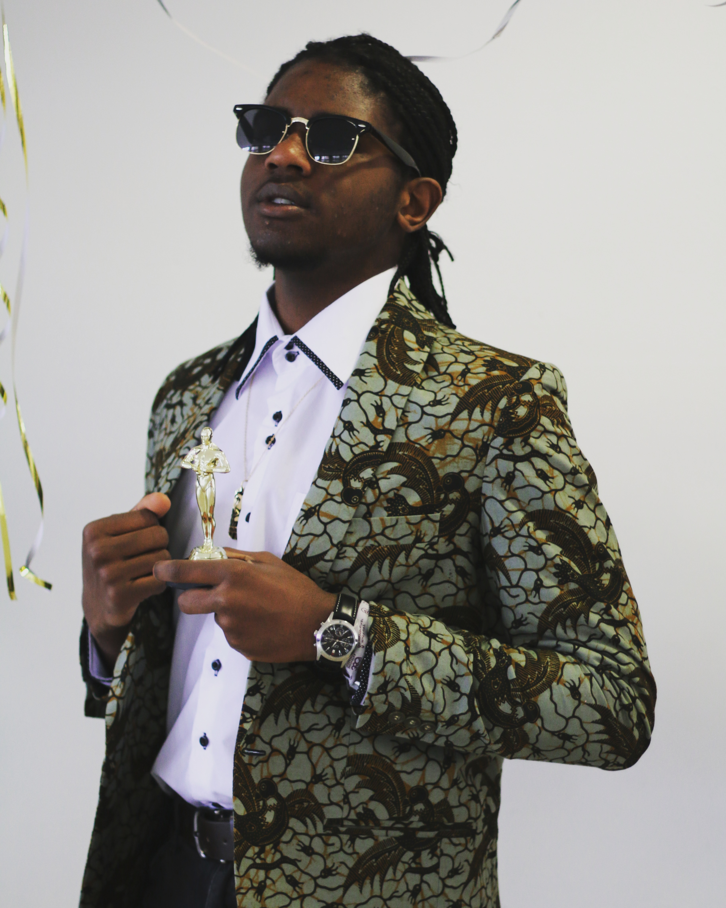

| About Me | Portfolio | Contacts |
|---|

Hi! Ich bin Richard Amadeus Mukasa (auch bekannt als Richard, Rich, Richie, Broke, Captain Habibi oder was auch immer dir einfällt).
Ich wurde am 10.02.2001 in Kaiserslautern geboren und habe den Großteil meiner Jugend in Bretten-Bauerbach verbracht.
Ich mache leidenschaftlich gerne Musik unter dem Künstlernamen BRØKE und habe auch an Grafikdesign und Videoediting meinen Spaß.